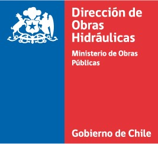
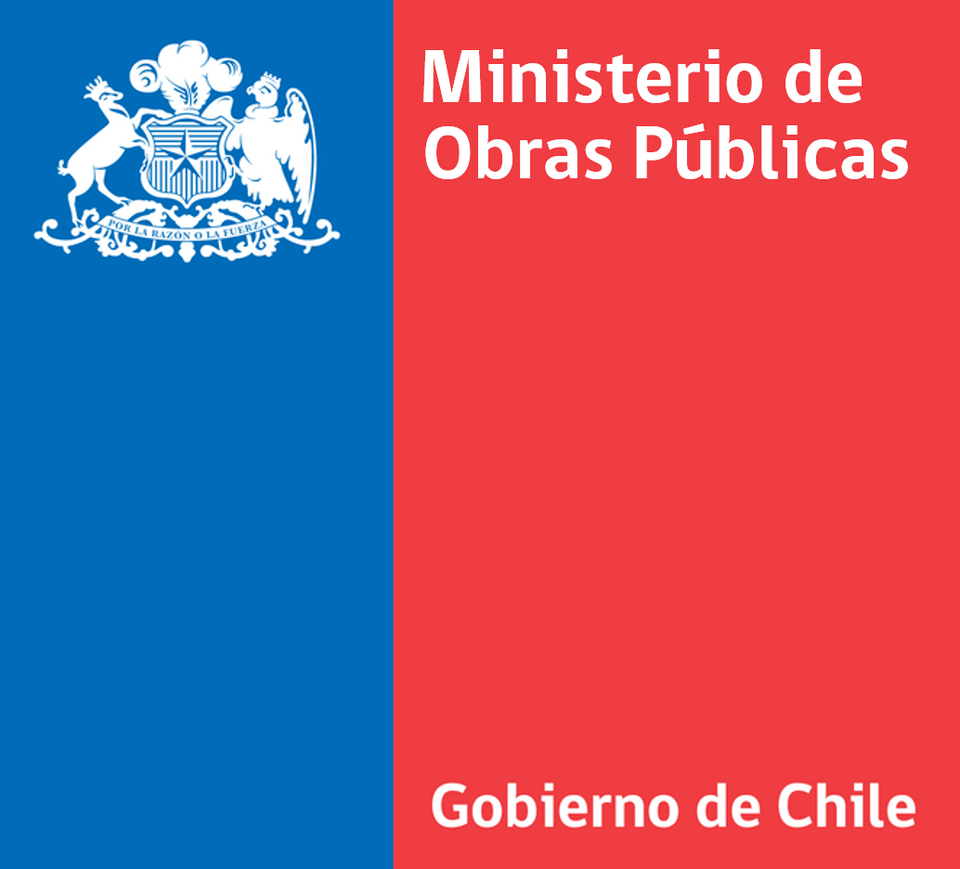
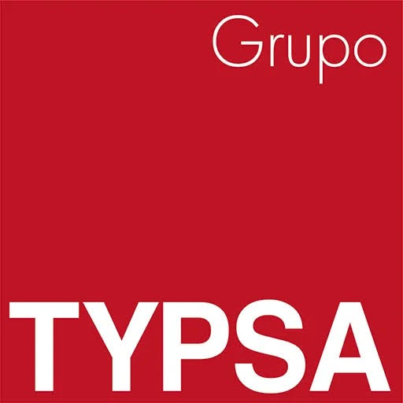

Avances en Terreno y Voces Oficiales
Visualiza el progreso del estudio técnico y las declaraciones de las autoridades regionales sobre la viabilidad e impacto de este importante proyecto hídrico.



Asegurando el suministro de agua para la agricultura y fortaleciendo el desarrollo en la cuenca del Río Claro, comuna de Rengo.
Conocer másEl régimen pluvio-nival del río Claro provoca una disminución de caudales en verano, afectando la disponibilidad de agua para riego en los períodos de mayor demanda agrícola.
Embalse con volumen total de 59 Hm³ y 143 Ha de área de inundación. Sustentará 5.975 acciones de la Junta de Vigilancia del Río Claro (equivalencia de 2,5 l/s).
Seguridad de riego, control de crecidas, respaldo a Servicios Sanitarios Rurales (SSR), apoyo en combate a incendios forestales y fomento al desarrollo turístico.
Visualiza el avance del proyecto a través de sus fases clave.
Visualiza el progreso del estudio técnico y las declaraciones de las autoridades regionales sobre la viabilidad e impacto de este importante proyecto hídrico.